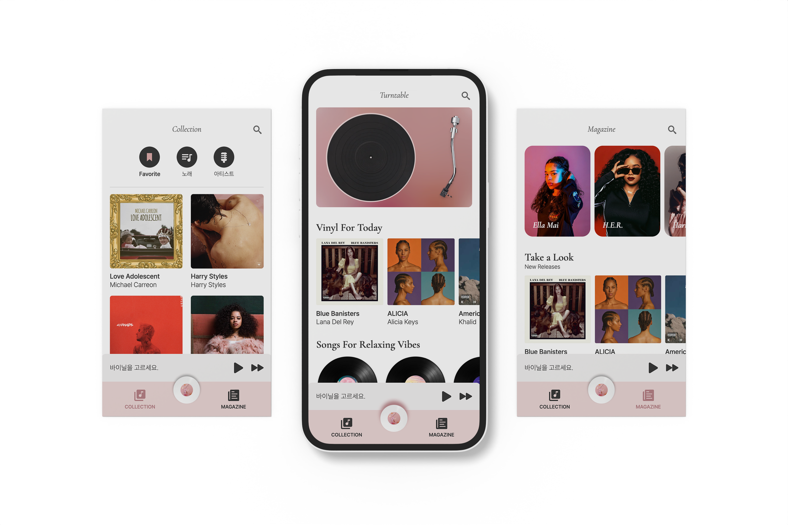

PROJECT PLANNING
Vinyl은 개인 프로젝트로 진행한 가상의 음악 스트리밍 웹앱 서비스입니다.
LP판과 턴테이블의 레트로한 감성을 살려 전체적인 UI 디자인에 적용하였으며,
주조색인 핑크 톤을 곳곳에 적절히 사용하여 브랜드의 정체성을 드러낼 수 있도록 신경 써 디자인했습니다.
OVERVIEW
color-chips

visual
스크롤되는 매거진 아티스트, 장르
HTML | CSS | JavaScript | jQuery
DEVELOPMENT ENVIRONMENT - Adobe XD, Photoshop, VSCode